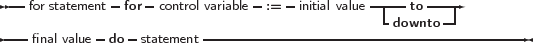
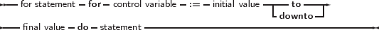

_________________________________________________________________________________________________________
For statement


___________________________________________________________________
Free Pascal supports the For loop construction. A for loop is used in case one wants to calculate something a fixed number of times. The prototype syntax is as follows:
_________________________________________________________________________________________________________
For statement

___________________________________________________________________
Here, Statement can be a compound statement. When the For statement is encountered, the control variable is initialized with the initial value, and is compared with the final value. What happens next depends on whether to or downto is used:
After this check, the statement after Do is executed. After the execution of the statement, the control variable is increased or decreased with 1, depending on whether To or Downto is used. The control variable must be an ordinal type, no other types can be used as counters in a loop.
Remark:
The following are valid loops:
The following will generate an error:
because the loop variable I cannot be assigned to inside the loop.
If the statement is a compound statement, then the Break and Continue system routines can be used to jump to the end or just after the end of the For statement. Note that Break and Continue are not reserved words and therefor can be overloaded.